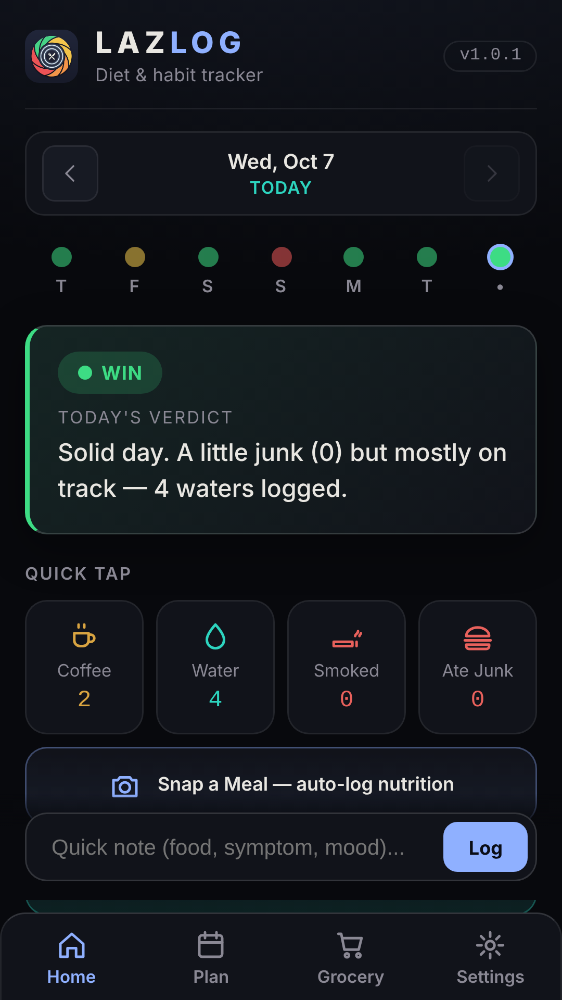
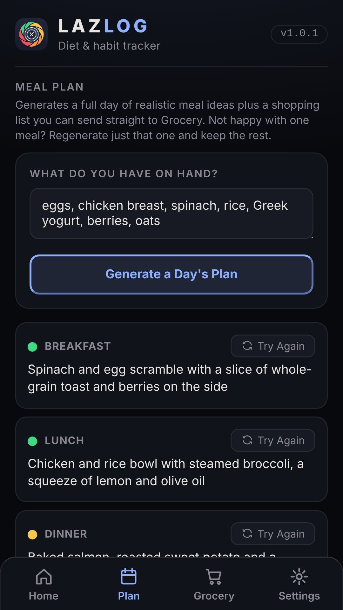

LAZLOG is a diet and habit tracker that tells you straight how today is going. Tap to log, snap a meal for instant nutrition, and keep everything on your own device.
Free. No account. Installs to your home screen from your browser.


No calorie-math homework. Every meal gets a plain colour rating, and every day gets a verdict.
Coffee, water, smokes, junk food, weight and how you feel. One tap each, with a running count for the day.
Take a photo and get an estimate of calories and macros, a colour rating and a digestion note, logged automatically.
Describe what you are about to eat, then keep refining. Swap ingredients, change the cooking method, get healthier alternatives.
Tell it what is in your kitchen and get a realistic day of meals. Not feeling one? Regenerate just that meal.
Send a plan's shopping list straight to Grocery, or scan an item on the shelf for a quick colour read.
One-tap backup and restore. Move to a new phone without losing a day.
Three minutes to set up, a few seconds a day after that.
Open the app in your browser and add it to your home screen. It works offline for logging.
Optional, for photo analysis, Ask My Chef and meal plans. Paste your own key once. It stays on your device.
Tap through your day. LAZLOG scores it and shows your last seven days at a glance.
There is no LAZLOG server and no account. Everything lives in your browser.